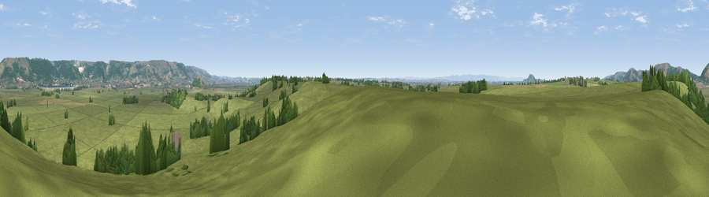

Viewpoint near Clewer
#21566 in England · top 51% of its area beats it · near ClewerWhere it is
The exact computed spot (ST 42625 51025). Click the marker for map links.
The view, rendered

A 360° render of this exact spot computed from the terrain model, tree cover and land cover — summer colours, afternoon light, calibrated against photographs of famous viewpoints. Real trees, hedges and buildings will differ in detail.
The panorama
Grey silhouette: terrain skyline in each direction (720 bearings, Earth curvature and refraction included). Dashed green: skyline with trees (+15 m) and buildings (+8 m) as obstacles. Blue strip: how far the ground is visible on each bearing.
Where the view opens
Wedge length = distance to the farthest visible ground on that bearing (vegetation-aware). Rings at 10, 25 and 50 km.
What fills the view
82% grassland · 13% woodland · 3% cropland · 2% built-up
Angular shares of the visible panorama (visual magnitude), not map area. Landscape diversity 0.27 (0–1 Shannon).
Key numbers
More beautiful places nearby
The staircase of upgrades: each row has a higher view potential than everything closer. Driving times are estimates from straight-line distance, calibrated against real road routing — check an actual route before setting out.
| Place | Direction | Drive | Score |
|---|---|---|---|
| Viewpoint near Cocklake | SSE · 2 km | ~6 min | 53.2 |
| Viewpoint near Axbridge | N · 5 km | ~10 min | 79.2 |
| Bleadon Hill [Loxton Hill] | NW · 9 km | ~17 min | 79.6 |
| Viewpoint near Holford | WSW · 29 km | ~46 min | 80.8 |
| Viewpoint near Holford | WSW · 29 km | ~46 min | 82.2 |
| Viewpoint near West Bagborough | SW · 30 km | ~47 min | 84.3 |
| Viewpoint near Holford | WSW · 30 km | ~47 min | 85.9 |
| Viewpoint near West Quantoxhead | WSW · 31 km | ~49 min | 87.9 |
51.25549, -2.82355 · source: screening · position refined by local search. Computed location — check access rights before visiting.